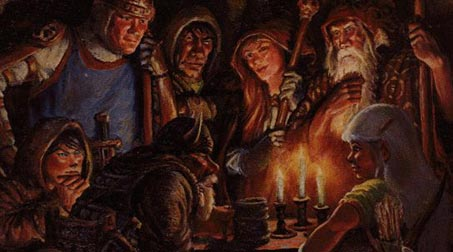

Хочешь, чтобы о тебе узнали?
Тогда следующая информация будет для тебя полезной.

Чтобы попасть в список жителей Анатолии необходимо:
- Быть игроком не менее 10 уровня!!!
- Прислать фотку и небольшой рассказ о своем персонаже и о его поведении в
Анатолии.
Также необходимо указать расу, пол, профессию, характер, религию и название клана (если
состоишь).
Отправить фотку и рассказ